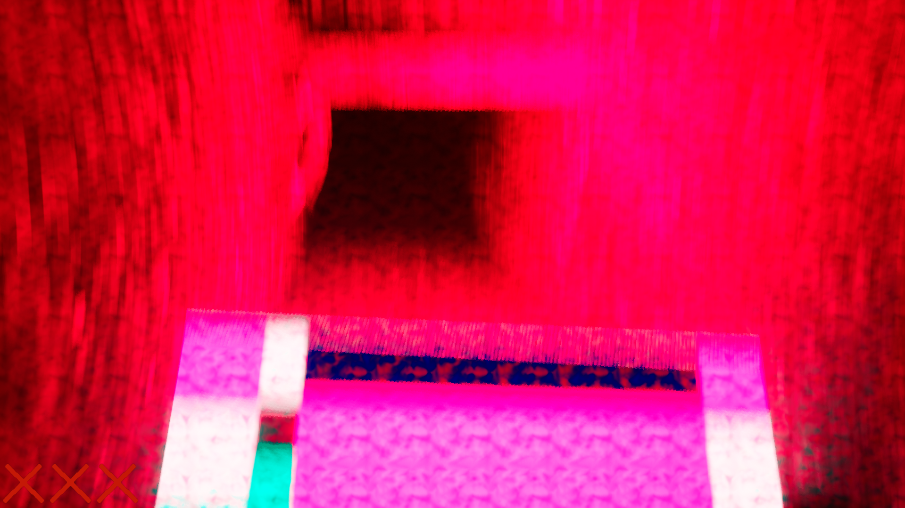

08-21-2024
by: James
First, all owners of On Your Hands will have their game automatically updated to version 5.10. We've been spending a good few months chipping away at a large swath of bugfixes for OYH, and we've managed to address a large number of them and bring the game to an even higher standard. In addition, we've also added a couple new features. An extended set of content warnings in the settings menu match a keybind that allows players to skip problematic levels. Also in the settings you'll find finer controls for the game's post-processing settings, so you can tune them to your liking.
Included in the Deluxe Edition Bundle for On Your Hands is the Founder's Edition, featuring a 30-page FBI document detailing the aftermath of the Wonder Project. This document contains biological information for the three human leads, a "where-are-they-now" for the main character, as well as lots of historical and scientific information on the planet of Ooblterra. It also features unique hand-drawn art, and even a puzzle mechanic. Yes, seriously.
Also included in the Deluxe Edition Bundle for On Your Hands is the full soundtrack. With all 25 of the game's original music tracks, plus 4 exclusive bonus tracks like the puzzle solve jingle, the soundtrack includes both portable MP3s and high quality WAV files for whatever method of listening you prefer.
Skeleton Studios has lots of work in the pipeline. Of course, Welcome to Ooblterra is overdue to be updated, which we hope to deliver in the coming weeks. In addition, we're hard at work on our next full release... and we promised an exclusive look, so here it is:
There. That's sure to give you a whole bunch to speculate on.